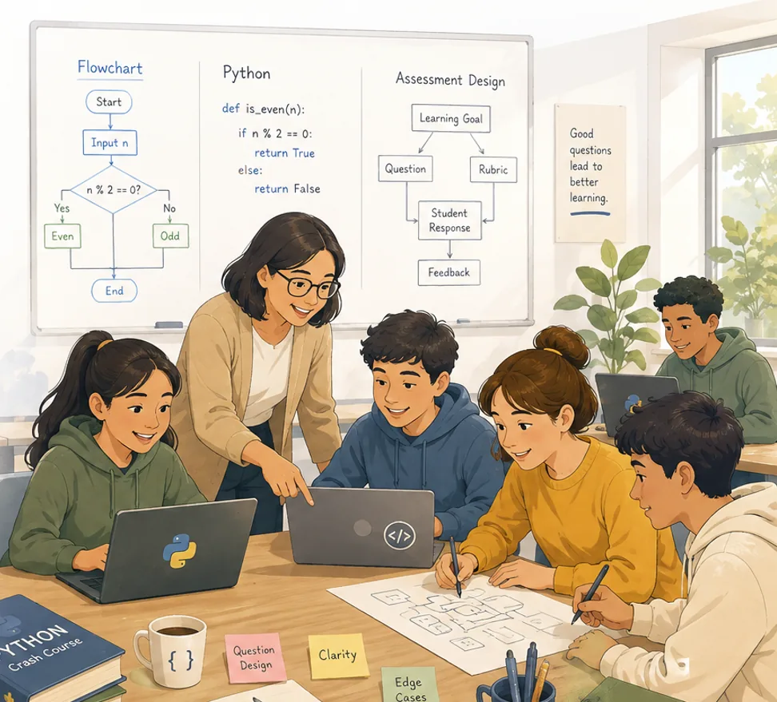

The framework
Philosophy, specifications, standards, workflow, and the scoring model — openly licensed and indexed for every teacher.
PyPractical brings the discipline of software engineering into the classroom — authentic problems, automatic grading, and a curriculum that builds confidence one small success at a time.

Open where openness helps everyone — thoughtful where openness could make teaching harder.
Philosophy, specifications, standards, workflow, and the scoring model — openly licensed and indexed for every teacher.
A canonical family demonstrates the format — like a language shipping with example programs, never the ones used for grading.
Classroom-ready families are distributed to educators — not publicly indexed, to protect assessment validity.
PyPractical is an open framework for engineering educational assessments. Classroom assessment packs intended for active instructional use are distributed separately to educators — like an open platform whose deployed quizzes remain under a teacher's stewardship.
Great software is built with specifications, standards, version control, automated tests, and continuous improvement. Great assessments deserve the same.
PyPractical treats every assessment as a small engineering artifact — with a problem specification, a Python template, a reference solution, a unit-test suite, and teacher notes. Each one is documented, tested, and openly shared.

Not a course. Not a platform. A growing bank of assessments you can use, adapt, and trust — tomorrow.
Problems resemble small, real applications — parking garages, libraries, hospitals — so students understand why programming exists. Difficulty comes from programming, never from confusing wording.
Every assessment ships with a unittest suite. Equal-weight tests, consistent scoring, immediate feedback. Teachers spend less time grading and more time teaching.
Dual-licensed (CC BY-SA 4.0 for documents, MIT for code). Adapt, improve, and redistribute — and share your improvements back, so the next teacher doesn't start from zero.
“We were no longer designing a single assessment. We were designing a better way to create assessments.” — the PyPractical founding story
Every assessment is shaped by the same rules — one new idea at a time, authentic stories, objective grading, and respect for students' and teachers' time.
Each assessment introduces a single primary concept; everything else reinforces prior learning.
Students grasp the goal within the first minute. Small wins build the confidence that keeps them programming.
Automatically gradable with unittest — behavior, not style; consistent and immediate.
Every classroom teaches something. Every assessment evolves. Growth is the purpose, not a sign the work was incomplete.
Browse 41 assessments across 11 families — from first steps in Python to inheritance, polymorphism, and design principles.